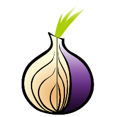
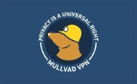

TOR (acronimo di The Onion Router) è un software libero che permette una navigazione anonima sul Web ed è basato sul
protocollo di rete di onion routing*: tramite il suo utilizzo è molto più difficile tracciare
o intercettare l'attività che l'utente compie su Internet, sia da parte di società commerciali che da parte di soggetti potenzialmente ostili.
*[onion routing ⇒ tecnica di anonimizzazione delle comunicazioni in una rete. In una rete onion,
i messaggi sono incapsulati in "strati" di crittografia che vengono paragonati agli strati di una cipolla.]

⇒ Metà degli anni '90: sviluppo del nucleo di Tor per la US Naval Research Laboratory, con lo scopo di proteggere le comunicazioni dei servizi segreti statunitensi;
⇒ 1997: sviluppo continuato da DARPA (Defense Advanced Research Projects Agency), un'agenzia governativa del Dipartimento della difesa degli USA
incaricata dello sviluppo di nuove tecnologie per uso militare;
⇒ 20 settembre 2002: lanciata la prima versione alfa;
⇒ 2004: il codice fu rilasciato su licenza libera (Open Source) e la Electronic Frontier Foundation (EFF),
un'organizzazione internazionale no profit rivolta alla tutela dei diritti digitali
e della libertà di parola nel contesto dell'era digitale, concesse dei fondi affinché il suo sviluppo fosse mantenuto attivo;
⇒ 2006: Roger Dingledine fondò The Tor Project, un'associazione (no profit) responsabile dello sviluppo di Tor.
La EFF continuò ad essere il principale sponsor del progetto;
⇒ 8 settembre 2006: serie di sequestri di server Tor in Germania da parte delle autorità per controllare l'eventuale presenza di materiale illegale,
contenuto in alcuni servizi nascosti → nascita dei termini "Deep Web" e "Dark Web";
⇒ 2015: col documento RFC7686 dell' Internet Engineering Task Force (IETF → organismo internazionale che si occupa
di sviluppare e promuovere standard Internet),
i domini di primo livello della darknet Tor (che hanno estensione .onion)
entrarono in una lista ristretta di domini speciali
(.local, .localhost, .example, .invalid, .test e altri), inaccessibili alla rete Internet pubblica.
I file .onion, da quel momento in poi, furono assegnati solo dalla rete Tor ed esclusi dal global-DNS;
⇒ 3 aprile 2023: Tor e il provider svedese di VPN Mullvad hanno rilasciato Mullvad Browser,
una versione modificata di Mozilla e meno rigida del Tor browser.

TOR è disponibile per Linux, Windows, Android, MacOS e tramite distribuzioni live (che si avviano da chiave USB o CD), per esempio, Tails. Si presenta, principalmente, come un normale browser per la navigazione: viene usata, infatti, una versione di Mozilla Firefox personalizzata e modificata.
L'interfaccia utente del browser Tor è simile a quella di Mozilla Firefox, essendo che si basa su di esso.
Tuttavia, presenta alcune variazioni per garantire la privacy e l'anonimato in rete.